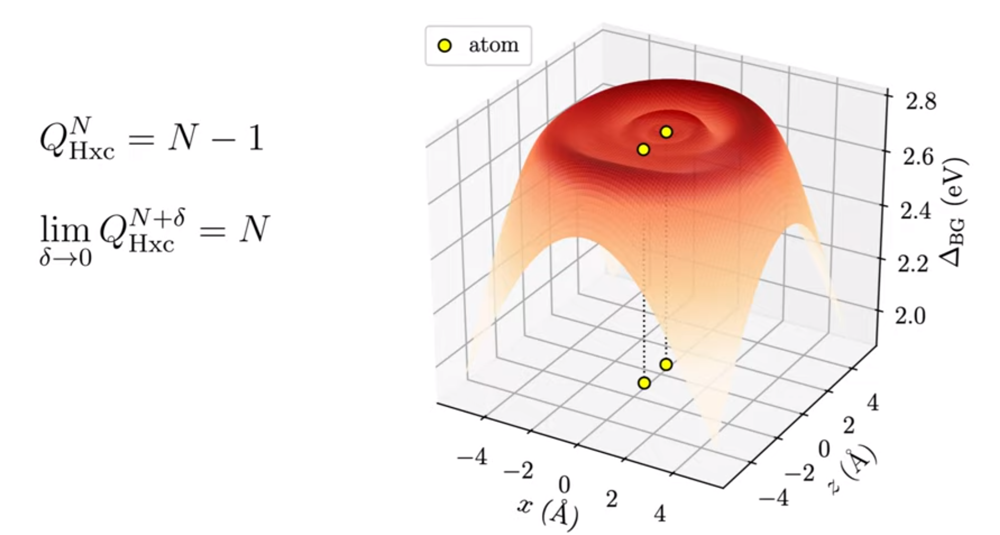
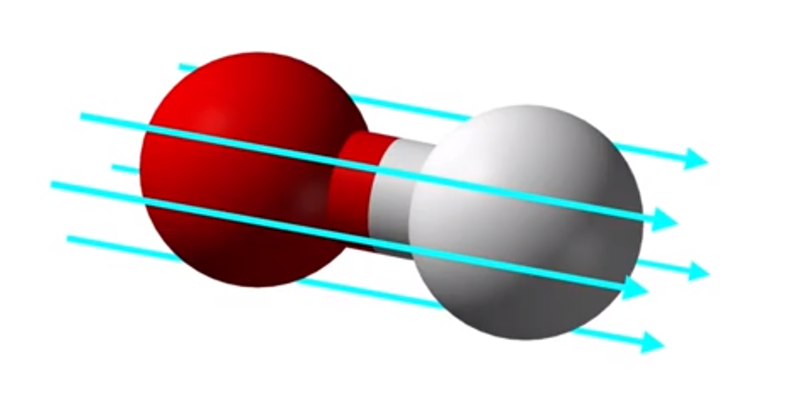
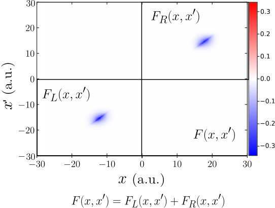
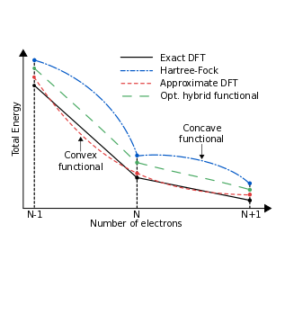
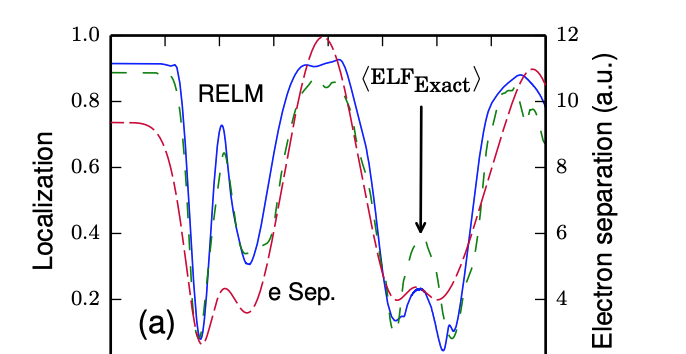
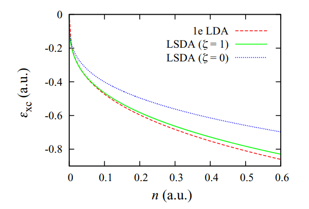

Machine learning the derivative discontinuity of density-functional theory
J. Gedeon, J. Schmidt, M. J. P. Hodgson, J. Wetherell, C. L. Benavides-Riveros and M. A. L. Marques, 2022 Mach. Learn.: Sci. Technol. 3 015011 (2021)
We explored the use of convolutional neural networks to accurately calculate electron addition energies. Density functional theory is traditionally unreliable for electron addition energies due to the non-analytic nature of the exact electron energy when electron charge is added. Our findings demonstrate that convolutional neural networks can effectively capture this non-analytic behaviour and provide accurate results for model systems.
M. J. P. Hodgson, Physical Review A 104, 032803 (2021)
In this research, I aimed to enhance the accuracy and speed of chemical simulations through the use of Kohn-Sham theory, the most widely-used method in solid-state physics. By studying chemicals within exact Kohn-Sham theory, I derived precise expressions for key features of the Kohn-Sham potential that are necessary for accurately modeling chemical processes.
From Kohn-Sham to many-electron energies via step structures in the exchange-correlation potential

Eli Kraisler, M. J. P. Hodgson and E. K. U. Gross, Journal of Chemical Theory and Computation 17 (3), 1390–1407 (2021)
In this research, we made significant strides in understanding how to accurately calculate excited electron states using Kohn-Sham density functional theory. These findings have important implications for the advancement of technologies such as organic solar cells and organic LEDs as they offer the prospect of highly efficient, accurate calculations of excitation energies.
Video summary — Reprint — Preprint — Cite
M. J. P. Hodgson, J. Wetherell and Emmanuel Fromager, Physical Review A 103, 012806 (2021)
This paper investigates a method for calculating the fundamental gap of any material while maintaining a fixed electron number, reducing the computational cost significantly. Using the ensemble density functional theory framework, we demonstrated the presence of non-analytic behaviour in the exact ensemble Kohn-Sham potential and showed that it can be confined to the periphery of the system, unlike in standard Kohn-Sham theory.
New approaches to study excited states in density functional theory: general discussion
J. G. Brandenburg, Kieron Burke, Emmanuel Fromager, Matteo Gatti, Sara Giarrusso, N. I. Gidopoulos, Paola Gori-Giorgi, Duncan Gowland, Trygve Helgaker, M. J. P. Hodgson, Lionel Lacombe, Gianluca Levi, Pierre-François Loo, N. T. Maitra, E. M. Morais, Nisha Mehta, Filippo Monti, M. R. Mulay, Katarzyna Pernal, Lucia Reining, Pina Romaniello, M. R. Ryder, Andreas Savin, Dumitru Sirbu, A. M. Teale, A. J. W. Thom, D. G. Truhlar, Jack Wetherell and Weitao Yang, Faraday Discussions 224, 483-508 (2020)
During the Royal Society of Chemistry's Faraday Discussions 2020, the effectiveness of various new techniques within density functional theory for accurately calculating excited states was evaluated and discussed.
T. J. Callow, B. J. Pearce, T. Pitts, N. N. Lathiotakis, M. J. P. Hodgson and N. I. Gidopoulos, Faraday Discussions 224, 126-144 (2020)
In this paper, we study physically motivated constraints on the Kohn-Sham potential of density functional theory in order to improve its accuracy. By applying these constraints to 3D molecules, we are able to accurately capture the non-analytic, discontinuous features of the exact Kohn-Sham potential that are missing in current approximate potentials. The accuracy of the Kohn-Sham potential is essential for making reliable predictions with quantum theory in real-world applications.
Video summary — Reprint — Preprint — Cite
M. J. P. Hodgson and J. Wetherell, Physical Review A 101, 032502 (2020)
This research presents a method for accurately calculating electron properties and real-time dynamics in molecular junctions using a nearsighted effective potential, which is only concerned with the local density rather than the electron density throughout the entire system. Traditional approaches using approximations of time-dependent density functional theory have proven unreliable in these situations. The proposed method successfully produces accurate results for model prototype molecular junctions.
Video summary — Reprint — Preprint — Cite
J. Wetherell, M. J. P. Hodgson, L. Talirz, and R. W. Godby, Physical Review B 99, 045129 (2019)
In this paper, we use a simple illustrative model to demonstrate that the discontinuous features of the exact Kohn-Sham potential have no counterpart within the nearsighted potential of many-body perturbation theories such as Hartree-Fock, the GW approximation and hybrid functionals. Our work highlights the importance of incorperating nearsightedness into Kohn-Sham-type theories.
Video summary — Reprint — Preprint — Cite
Accuracy of electron densities obtained via Koopmans-compliant hybrid functionals
A. R. Elmaslmane, J. Wetherell, M. J. P. Hodgson, K. P. McKenna, and R. W. Godby, Physical Review Materials 2, 040801(R) (2018)
In this research, we examined the accuracy of the electron density produced by hybrid density functional methods, which have gained popularity for accurately predicting excitation energies. Using prototype systems for which the exact electron density is known, we found that hybrid functionals based on Koopmans' theorem yield highly accurate densities. This suggests that hybrid functionals may be used to accurately determine other observables from the electron density.
GW self-screening error and its correction using a local density functional
J. Wetherell, M. J. P. Hodgson, and R. W. Godby, Physical Review B 97, 121102(R) (2018)

In this research, we present a new method for correcting the self-screening error in the GW approximation of many-body perturbation theory, which is commonly used to calculate the spectral function of materials. The self-screening error occurs when an electron artificially screens its own presence within the GW approximation. Our correction, which is based on density functional theory, could allow for more accurate analysis of the chemical composition of materials.
Electron localisation in static and time-dependent one-dimensional model systems
T. R. Durrant, M. J. P. Hodgson, J. D. Ramsden and R. W. Godby, Journal of Physics: Condensed Matter 30 065901 (2018)
In this research, we analysed the accuracy of the electron localisation function (ELF) in approximating the degree of localisation in molecules. The ELF is a useful measure of localisation, but it requires approximations for practical calculations. We used the regional electron localisation measure (RELM) to compare the exact and approximate ELFs in model systems. We found that the approximate ELF, which is commonly used in density functional theory, is accurate for ground state systems, but becomes unreliable when the system is perturbed.
Accepted Manuscript — Preprint — Cite
M. J. P. Hodgson, E. Kraisler, A. Schild, and E. K. U. Gross, The Journal of Physical Chemistry Letters 8 (24), 5974–5980 (2017)
In this Letter, we discovered a previously unknown connection between two known features of the exact Kohn-Sham potential: the discontinuous shift in the potential when adding electron charge and the sharp spatial steps that occur between atoms in molecules. We also demonstrated how this novel feature relates the charge-transfer energy of the system to the corresponding quantity in the Kohn-Sham system.
Video summary — ACS Articles on Request link — Preprint — Cite
Local density approximations from finite systems
M. T. Entwistle, M. J. P. Hodgson, J. Wetherell, B. Longstaff, J. D. Ramsden, R. W. Godby, Physical Review B 94, 205134 (2016)
In this research, we examined the performance of local density approximations (LDAs) constructed from finite few-electron systems, including a system with only one electron. We found that these LDAs showed strong similarities to the standard LDA, which is derived from an infinite-electron gas, leading us to question the ability of the LDA to capture many-body electron effects. This work has implications for the accuracy of density functional theory when applied to systems with a small number of electrons.
Origin of static and dynamic steps in exact Kohn-Sham potentials
M. J. P. Hodgson, J. D. Ramsden and R. W. Godby, Physical Review B 93, 155146 (2016)
In this paper we study the formation of sharp changes in the Kohn-Sham potential, known as steps. Previous approximations have been unable to capture these features, which occur in important physical scenarios. By studying the origin of these steps, we inform the development of more accurate approximations for the Kohn-Sham potential.
Role of electron localization in density functionals
M. J. P. Hodgson, J. D. Ramsden, T. R. Durrant and R. W. Godby, Physical Review B 90, 241107(R) (2014)
A novel approach to formulating approximations with density functional theory is proposed. The known analytic form of the exact Kohn-Sham potential for a fully localised electron is combined with existing approximations which favour delocalised electrons. The proportions in which these potentials are combined depends on the level of electron localisation in each region of space at a given time. This approximation captures several important properties of the exact time-dependent Kohn-Sham potential which are currently missing from popular approximations.
Adiabatic and local approximations for the Kohn-Sham potential in time-dependent Hubbard chains
L. Mancini, J. D. Ramsden, M. J. P. Hodgson and R. W. Godby, Physical Review B 89, 195114 (2014)
In this study, we used the Hubbard model to examine the accuracy of various approximations for the Kohn-Sham potential in density functional theory. By comparing the results to the exact potential, we were able to identify the limitations of current approximations and highlight the need for improved methods.
Exact time-dependent density-functional potentials for strongly correlated tunneling electrons
M. J. P. Hodgson, J. D. Ramsden, J. B. J. Chapman, P. Lillystone, and R. W. Godby, Physical Review B 88, 241102(R) (2013)
In this research article, we introduce iDEA, a code for simulating exact many-body electron systems in one dimension. iDEA can be used to explore various aspects of quantum theory, both in its exact and approximate forms, such as Kohn-Sham density functional theory. We demonstrate the use of iDEA by studying electron tunnelling and find that the corresponding exact time-dependent Kohn-Sham potential exhibits features that are missed by commonly used approximations.
Electrons in model nanostructures
M. J. P. Hodgson, PhD thesis, University of York (2016)
K. M. Stott Prize
Best PhD thesis & defence
Awarded for excellence in scientific or medical research.